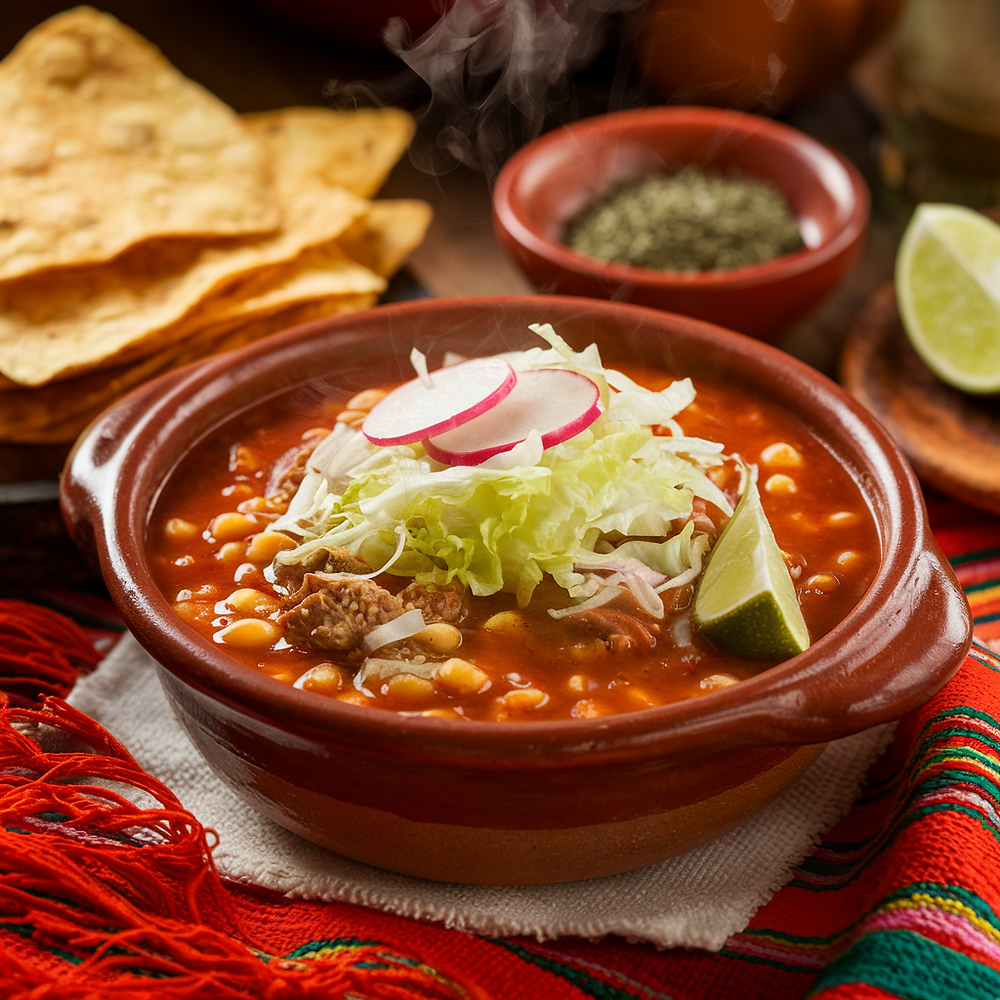
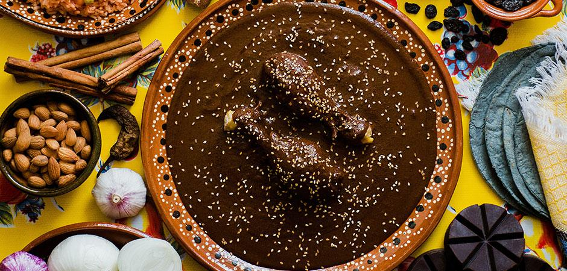
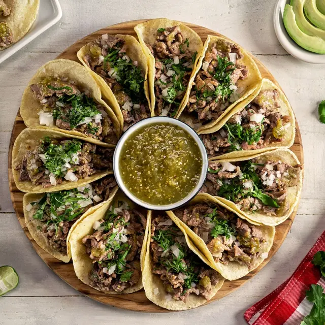

Gastronomía mexicana
La gastronomía mexicana es reconocida por su variedad de sabores, ingredientes y técnicas tradicionales. Cada región del país cuenta con platillos que forman parte de su identidad y sus costumbres.
Tradiciones culinarias
Las tradiciones culinarias se transmiten de generación en generación. La preparación de los alimentos puede formar parte de celebraciones, reuniones familiares y diferentes acontecimientos culturales.


Ingredientes y sabores
Ingredientes como el maíz, chile, frijol, tomate y diferentes especias son fundamentales en muchas preparaciones mexicanas. La combinación de estos ingredientes permite crear una gran variedad de sabores.
La importancia de la gastronomía
La gastronomía no solamente consiste en preparar alimentos. También permite conocer la historia, las costumbres y las tradiciones de diferentes pueblos. Por esta razón, la comida es una parte importante de la cultura.
Regresar al inicioVer platillos